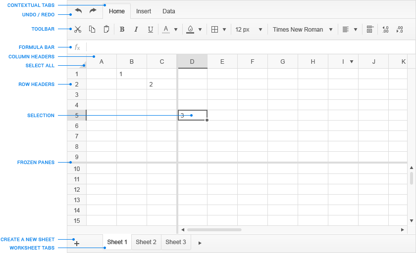

This guide is intended for the end user of the Spreadsheet.
The document provides information about the functionalities of the widget for data entry and management.
This guide uses the following conventions:
| Item |
Convention |
| Buttons, menus, tabs, dialog titles |
boldface font |
| Keyboard buttons, names of functions |
screen font |
| Selection sequences of buttons or options |
Data > Data Validation
|
The Kendo UI Spreadsheet is used for the implementation of related data and its visualization in a tabular format (rows and columns). This kind of data structuring provides for an easier management and analysis. The widget renders the touch and feel of a Microsoft Excel table by offering many cell-formatting options, styles, and themes while utilizing simpler and easy-to-master user interface.
Figure 1: Main Elements of the Spreadsheet

When you open the Spreadsheet, the widget automatically generates a worksheet and applies to it a collection of default settings.
| What you want |
How to get there |
| Select |
Click Select All [ ] located to the left of column header A and above row header 1 on the active sheet |
| Create |
Click + on the Sheet Tab Bar to create a new sheet |
| Rename |
- Double-click the tab of the sheet you want to rename and modify it
- Press
Enter to exit, or click anywhere on the sheet
|
| Reorder |
Click and hold the sheet tab, and drag it to the desired location on the Sheet Tab Bar |
| Delete |
Click X [ ] on the tab of the sheet you want to remove |
| What you want |
How to get there |
| Select/activate |
Click a cell |
| Select a range of cells |
- Click a cell
- Extend the selection by holding down the mouse while marking the selection you want
|
| Edit |
Double-click a cell |
| Copy content |
- Select a cell
- Click Copy [ ] on the Toolbar, or right-click the desired cell to display the context menu and choose Copy from it, or use the
Ctrl + C keyboard shortcut
|
| Cut content |
- Select a cell
- Click Cut [ ] on the Toolbar, or right-click the desired cell to display the context menu and choose Cut from it, or use the
Ctrl + X keyboard shortcut
|
| Paste content |
- Click the cell where you want to place the copied or cut content
- Click Paste [ ] on the Toolbar, or right-click the desired cell to display the context menu and choose Paste from it, or use the
Ctrl + V keyboard shortcut
|
| Delete content |
- Select a cell
- Press Delete on your keyboard to remove its content
|
| Align content |
- Select a cell
- Click Alignment [ ] on the Toolbar
- Choose a style form the drop-down list
|
| Wrap content |
- Select a cell that contains the content you want to wrap
- Click Wrap Text [ ] on the Toolbar
|
| Merge cells |
- Select the cells you want to merge
- Right-click the selection > Merge
- Select the option from the Merge Cells pop-up window
|
| Merge cells (via Toolbar) |
- Select the cells you want to merge
- Click Merge Cells [ ] on the Toolbar
- Choose an option from the drop-down list
|
| Add a background color |
- Select a cell
- Click Background [ ] on the Toolbar
- Choose a color from the drop-down list to apply to the cell background
|
| Choose border styles and colors |
- Select a cell
- Click Borders [ ] on the Toolbar
- Select the border style and/or the color from the drop-down list
- Click anywhere on the sheet to exit
|
| What you want |
How to get there |
| Select/activate |
Click the row header against of the row you want to select |
| Insert |
- Select a row by clicking on the respective row header
- Click the Insert tab from the Menu
- Click Add Row Below [ ] or Add Row Above [ ] on the Toolbar
|
| Delete |
- Right-click the row header
- Choose Delete
|
| Delete (via Toolbar) |
- Select a row by clicking on its row header
- In the Menu click Insert
- On the Toolbar click Delete Row [ ]
|
| Hide |
- Select the rows by clicking on the respective row header
- Right-click the row header
- Choose Hide
|
| Wrap content |
- Select a row
- Click Wrap Text [ ] on the Toolbar
|
| Resize the height of a row |
- Select a row or a cell from a row
- Hover the pointer over the row header field until either the upper or bottom field border is highlighted
- Click the highlighted area and hold while dragging it to the desired height. Release the hold.
|
| Add a background color |
- Select a row
- On the Toolbar click Background [ ]
- Select the color from the drop-down list
|
| Choose border styles and colors |
- Select a row
- Click Borders [ ] on the Toolbar
- Select the border style and/or the color from the drop-down list
- Click anywhere on the worksheet to exit
|
| What you want |
How to get there |
| Select/activate |
Click the column header against the column you want to select |
| Insert |
- Select a column by clicking on the respective column header
- Click the Insert tab from the Menu
- On the Toolbar click Add Column Left [ ] or Add Column Right [ ]
|
| Delete |
- Select the columns by clicking on the respective column header
- In the Menu click Insert
- On the Toolbar click Delete Column [ ]
|
| Hide |
- Select a column by clicking on the respective column header
- Right-click the column header
- Choose Hide
|
| Wrap content |
- Select the column whose content you want to wrap
- Click Wrap Text [ ] on the Toolbar
|
| Resize the width of a column |
- Select a column or a cell within a column
- Hover the pointer over the column header field until either the left or right border is highlighted
- Click the highlighted area and hold while dragging it to the desired width. Release the hold.
|
| Add a background color |
- Select a column
- On the Toolbar click Background [ ]
- Select the color from the drop-down list
|
| Choose border styles and colors |
- Select a column
- Click Borders [ ] on the Toolbar
- Select the border style and/or the color from the drop-down list
- Click anywhere on the sheet to exit
|
| What you want |
How to get there |
| Choose fonts |
- Select the cells to which you want to apply the font
- On the Toolbar click Font [ ]
- Choose a font type from the drop-down list
|
| Edit font sizes |
- Select the cells to which you want to apply the font size
- On the Toolbar click Font Size [ ]
- Choose the font size from the predetermined values in drop-down list
|
| Format fonts |
- Select the cells where you want to format the font
- Use any of the following commands:
- To make make the font bold, click Bold [ ] on the Toolbar
- To make make the font italic, click Italic [ ] on the Toolbar
- To make make the font underlined, click Underline [ ] on the Toolbar
|
| What you want |
How to get there |
| Sort fields |
- Click Data on the Tab Bar
- Select a column
- Click Sort [ ] on the Toolbar and choose any of the two options from the drop-down list:
-
Sort range A to Z sorts the content within the selected columns in ascending order
-
Sort range Z to A sorts the content within the selected columns in descending alphabetical order
|
| Unsort fields |
- Click Undo [ ] on the Menu to reverse the sorting you made.
- Add a new column. Check which is the last active field of the columns whose data you want to sort. Then add a subsequent number (1, 2, 3, etc.) to each field of the recently added column ending with the field in the same row as the last field of the columns whose content you want to sort. In this way you can revert the sorting of the target columns by applying the sorting option in ascending order to the recently added helper column.
|
| Filter information |
- Click Data on the Tab Bar
- Select the columns to which you want to apply the filtering criteria
- Click Filter [ ] on the Toolbar
- Choose from the drop-down list of options:
-
Sort range A to Z sorts the data within the columns in ascending alphabetical order
-
Sort range Z to A sorts the data within the columns in descending alphabetical order
-
Filter by condition filters the data within the column by applying any of the conditions from the drop-down list of options. Each of them can be applied to text fields, dates, or numbers:
-
Text fields: Choose any of the options referring to texts from the Filter by condition drop-down list. Fill in the field below to set the filter condition. Click Apply. For example, choose Text starts with, set the condition to E, and click Apply. The result shows all rows containing text fields that start with an E. You can alphabetically sort the filtered information by clicking Sort range A to Z or Sort range Z to A.
-
Dates: Choose any of the options referring to dates from the Filter by condition drop-down list. Fill in the field below to set the filter condition. Click Apply. For example, choose Date is, set the condition to 6/30/2014, and click Apply. The result is a list of only rows containing fields that display the date 6/30/2014. Note that the date format may differ depending on the order of date components. Make sure you check the current format before applying this filter.
-
Numbers: Choose any of the options referring to numbers from the Filter by condition drop-down list. Fill in the field below to set the filter condition. Click Apply. For example, choose Is equal to, set the condition to 10230, and click Apply. The result is a list of only rows containing fields that display the number 10230.
To retrieve all applied filters and sorting conditions, from Filter by condition choose None > Apply.
-
Filter by value provides more options for filtering numbers.
- Select the checkbox against All to clear all conditions and view all rows within the active sheet
- Uncheck All to clear all checkboxes, and choose the values according to which you want to filter the data in the selected columns.
|
You are able to export the content of your Spreadsheet to Portable Document Format (PDF) or Excel format (.xlsx) files, as well as import Excel Workbook content to the Spreadsheet.
| What you want |
How to get there |
| Import files |
- Click Open [ ] on the Toolbar.
- From the dialog box select the Excel Workbook you want to import by clicking on it.
- Click Open to load its content.
|
| Export files |
- Click Export [ ].
Export in PDF 2. In the File name field fill in a name for the file that is going to be exported. 3. From the drop-down list against Save as type choose Portable Document Format (.pdf). 4. From the Export drop-down list choose which part of the content you want to export—the entire workbook, active sheet, or a partial content selection. 5. From the Paper size drop-down list pick the size in which you want the exported file to be displayed. 6. From the Margins drop-down list select what the margins of the resulting pages—normal, narrow, or wide. 7. Indicate whether you want to display the content of the resulting file in a horizontal or vertical orientation by clicking on the respective icon. 8. By checking Guidelines against Print, your exported PDF document is going to display its content in a table format with gridlines. If you want to disable the gridlines, uncheck the button. By default, Guidelines is checked for you to provide for the better visualization of the content. 9. Checking the Fit to page option against Scale is going to automatically make the content from your spreadsheets fit within the boundaries of the exported PDF document. By default, Fit to page is checked for you to provide for the better visualization of the content. 10. By checking the Horizontally option against Center, the content of the exported PDF file is going to be centered according to the horizontal margins of each exported sheet. By checking the Vertically option against Center, the content of the exported PDF file is going to be centered according to the vertical margins of each exported sheet. By default, both options are checked for you to provide for the better visualization of the content. 11. Click Save to locally download the exported PDF file and follow your browser instructions to proceed further on.
|
| What you want |
How to get there |
| Auto fill |
- Insert textual, numeric, or textual and numeric characters of one and the same pattern in at least two subsequent column cells. For example, 1, 2.
- Select these cells.
- To copy the data series automatically, drag the fill handle across, down, or up the cells you want to fill.
Note that the Auto Fill command copies the format of the cells with the initial data series and will apply it to the target ones. If you select just one cell and drag the fill handle to auto-complete adjacent cells, the command copies, but does not change in the existing pattern, the content from the initial cell to each of the target ones.
|
| Freeze panes |
- Select the row or column which you want to freeze
- From the Toolbar click Freeze Panes
- Choose the option from the drop-down list
|
Apply the Undo function |
Click Undo [ ] on the Menu to reverse the actions you made during your current session. The number of actions you can reverse using Undo is unlimited. |
Apply the Redo function |
Click Redo [ ] on the Menu to repeat the actions you made during your current session. The number of actions you can repeat using Redo is unlimited. |
| Increase decimal values |
Click Increase Decimal [ ] on the Toolbar to increase the number of digits after the decimal point |
| Decrease decimal values |
Click Decrease Decimal [ ] on the Toolbar to decrease the number of digits after the decimal point |
| Customize the format of numbers |
- Select the cells where you want to format the font
- Click Custom Format [ ] on the Toolbar
- Select an option from the drop-down list. The style of formatting is hinted to the right of each option.
|
| Further customize the format of numbers |
- Select the cells whose content you want to format
- Click Custom Format [ ] > More Formats. Choose any of the following options:
-
Number customizes the format of numerical input
-
Currency customizes the format of currency input
-
Date customizes the format of date input
|
| Apply formulas and functions |
- Select a cell
- Go to the Formula Bar and type an equal sign [
= ] - Type your formula/function and press
Enter once done to see the outcome of your input in the cell. Note that when you start writing a function, the AutoComplete prompts you with the syntax.
|
| Edit formulas and functions |
- Double-click a cell to display the formula/function in the Formula Bar
- Change the formula/function and press
Enter
|
| Validate data |
Data validation allows you to predetermine the format and constrain the value of the content of a single cell or cells within a range, column, or row:
- Select a cell or a range of cells
- In the Menu click Data > Data Validation to open the Data Validation window
- Choose the criterion from the drop-down list of options.
- A new window with criteria-specific options appears. Use the prompts and drop-down options to set the rules for modifying the content.
|
| Choose data from predefined values |
The Spreadsheet supports the implementation of custom editors. They facilitate your input of data in a cell by providing you with predefined date and list values that are already placed in the necessary format. For example, if you are asked to fill in a date in a cell, clicking the icon of the custom editor of that cell provides you with a calendar. Choose the desired date without bothering about the syntax you are supposed to use to fill it in.
- Select a cell.
- An icon appears right next to it. Click on it to see the options that are predefined for you to choose from.
|
| Define names for cells and ranges of cells |
It is possible to define a custom name for a cell or a range of cells in the Spreadsheet. As a result, instead of typing the range in formulas later on, you can directly refer to the range by its name.
- Select a cell or a range of cells by using the mouse. For example, select the
A1:C3 range. - Click on the Name Box of the Spreadsheet.
- Type in the name of the range that is currently selected. For example, name the range MyRange.
- Press
Enter. - Go to a cell outside the range and type in the Formula Bar a formula which refers to the range by its name. For example,
=SUM(MyRange)+2.
|
| Delete names of cells and ranges of cells |
- Select the name of the cell or the range of cells from the Name Box.
- Click X.
|
Important
- To close an active drop-down list or menu or exit an open window and then return to the worksheet, click Cancel whenever displayed as a command.
- To apply an options you have already selected, click Apply whenever displayed as a command.
The Spreadsheet supports many of the Excel formulas and functions as seen in the List of Formulas and Functions.
The Spreadsheet supports many of the Excel keyboard shortcuts as seen in the List of Keyboard Shortcuts.
- Because of specific requirements, browsers might not support the Paste command when it is initiated from the context menu or from the Toolbar. If you try to apply the command in either of these ways, a popup message is displayed informing you about the limitation. Use the keyboard navigation to achieve the desired result.
- Formulas that are very deeply nested, such as
=sin(cos(sin(cos(...)))) or =A1+A2+A3+...+A200, might produce a stack overflow error. Even though the latter does not seem nested, it is internally treated as =((((...(A1+A2)+A3)+A4)+...+)+A200)).
Solution
Use SUM when your case is similar to the second example of the nested formulas above. If to use SUM is not possible, avoid nesting values more than 100 levels deep. Note that the maximum depth depends on the browser, but one hundred is considered to be a safe limit.
Other articles on Kendo UI Spreadsheet: